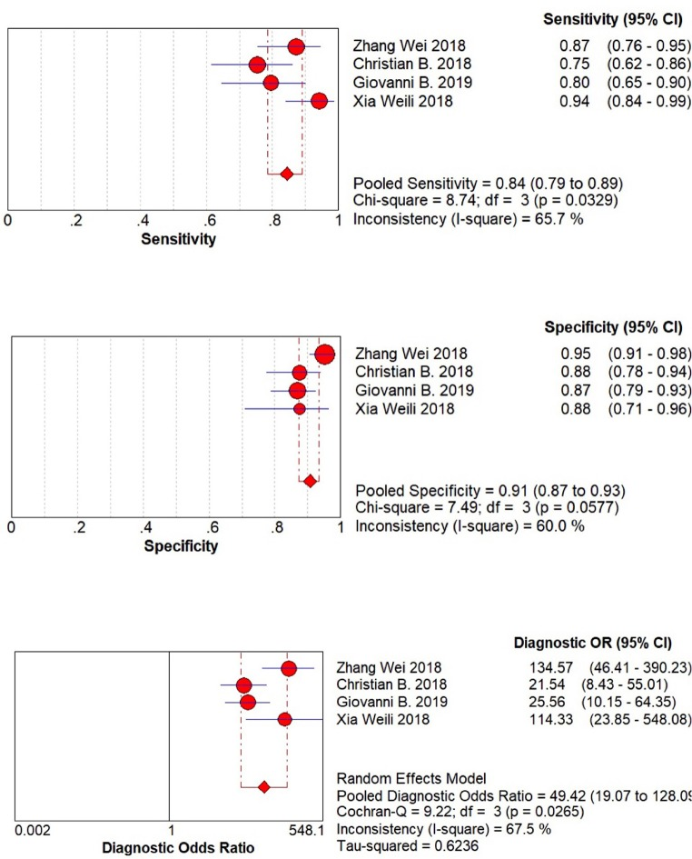
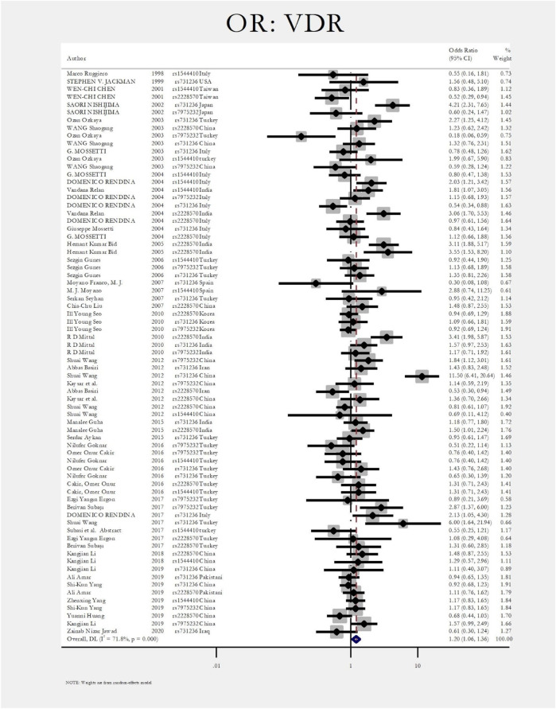
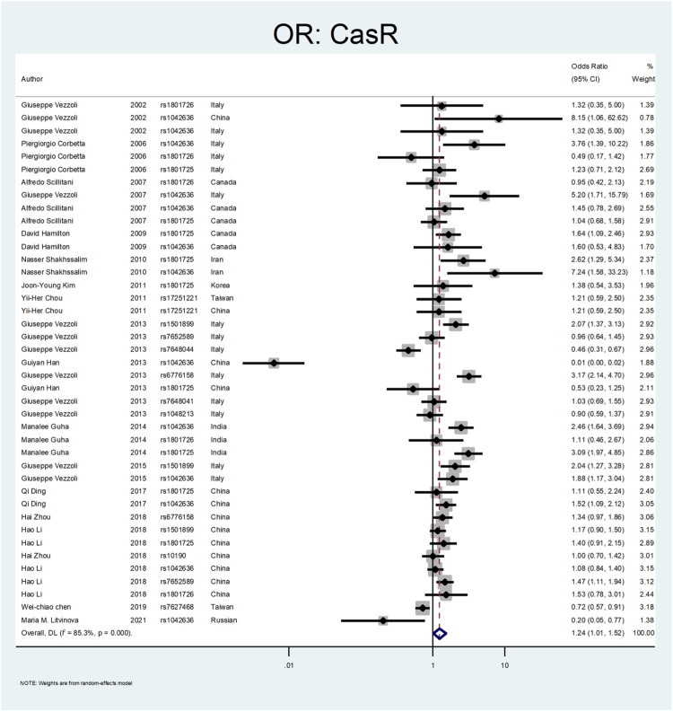
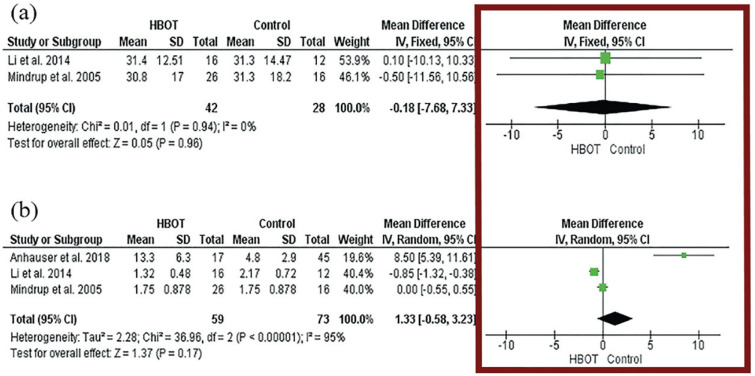

Estos 4 forest plots provienen de revisiones sistemáticas y meta-análisis reales y de acceso
abierto en urología. Antes de leer la explicación de cada uno, intenta responder: ¿qué mide el eje
X?, ¿el efecto favorece la intervención o el control?, ¿hay heterogeneidad (I²) relevante?, ¿el resultado es
estadísticamente significativo?
1
Precisión diagnóstica de RM multiparamétrica en cáncer vesical

¿Qué está midiendo este forest plot y qué tan consistentes son los estudios incluidos?
Este panel agrupa sensibilidad, especificidad y odds ratio diagnóstico de estudios que evalúan RM
multiparamétrica para estadificar cáncer vesical músculo-invasivo. Cada línea horizontal es un estudio
individual; el rombo inferior es el efecto combinado. Presta atención al I² reportado: valores altos
indican que los estudios primarios no son directamente comparables (diferentes protocolos de RM, lectores,
umbrales de estadificación).
Zhang N, Wang X, Wang C, et al. Diagnostic Accuracy of Multi-Parametric Magnetic Resonance Imaging for
Tumor Staging of Bladder Cancer: Meta-Analysis. Frontiers in Oncology. 2019;9:981.
doi:10.3389/fonc.2019.00981 — PMC6788297 (CC BY, acceso abierto)
2
Polimorfismo VDR y riesgo de litiasis renal

¿El intervalo de confianza del efecto combinado cruza la línea de no efecto? ¿Qué implica eso?
Este es un meta-análisis genético clásico: cada estudio caso-control aporta un OR con su IC95% para la
asociación entre un polimorfismo del gen VDR y litiasis renal. Si el rombo del efecto combinado cruza el 1
(línea de no efecto), la asociación global no es estadísticamente significativa, aun si algunos estudios
individuales sí muestran significancia — un ejemplo útil para discutir por qué no basta con mirar un solo
estudio.
Mohammadi A, Shabestari AN, Baghdadabad LZ, et al. Genetic Polymorphisms and Kidney Stones Around the
Globe: A Systematic Review and Meta-Analysis. Frontiers in Genetics. 2022;13:913908.
doi:10.3389/fgene.2022.913908 — PMC9280078 (CC BY, acceso abierto)
3
Polimorfismo CASR y riesgo de litiasis renal

Compara este plot con el #2 (mismo artículo, gen distinto): ¿cuál tiene menos estudios y por qué eso afecta la interpretación?
Del mismo meta-análisis genético, pero para el gen CASR (receptor sensor de calcio). Con menos estudios
incluidos, los intervalos de confianza individuales tienden a ser más anchos y el resultado combinado es
menos preciso — un buen ejemplo para enseñar que el ancho del rombo depende tanto del tamaño del efecto
como del número y tamaño de los estudios disponibles.
Mohammadi A, Shabestari AN, Baghdadabad LZ, et al. Genetic Polymorphisms and Kidney Stones Around the
Globe: A Systematic Review and Meta-Analysis. Frontiers in Genetics. 2022;13:913908.
doi:10.3389/fgene.2022.913908 — PMC9280078 (CC BY, acceso abierto)
4
Anatomía de un forest plot (figura didáctica)

Usa esta figura para verificar tus respuestas de los 3 plots anteriores: ¿identificaste correctamente cada elemento (eje X, línea de no efecto, IC, rombo)?
Esta figura, tomada de un artículo educativo sobre meta-análisis en urología, etiqueta explícitamente los
componentes de un forest plot: eje vertical (lista de estudios), eje horizontal (medida de efecto — OR, RR,
diferencia de medias), línea de no efecto, intervalos de confianza de cada estudio y el rombo del efecto
combinado. Úsala como referencia para autocorregir tus interpretaciones de los plots #1–3.
Favorito LA. Systematic review and metanalysis in urology: how to interpret the forest plot. International
Brazilian Journal of Urology. 2024;49(6):775–778. doi:10.1590/S1677-5538.IBJU.2023.9911 — PMC10947628
(CC BY, acceso abierto)